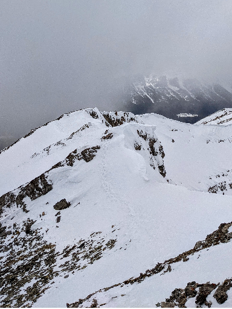

2021-21-6
We had the trig final which I did okay on - like 93%. Not spectacular, just pretty average.
We also did the entire sequences and series unit in a week, and had the unit test last friday.
I think I smashed it - If I don't get 100% I'll be surprised. The questions on the worksheet we got were super
difficult, but the ones on the test were so easy.
We also finished the solutions unit in chemistry. We did 2 labs in the last two weeks, both of which I only lost 1 point each on. The unit test is this Tuesday.
Last friday I had to do 2 tests and hand in a lab, and the day before, I had a french presentation. I had a multiple choice reading comprehention test, the math unit final, and a lab for Iron to Copper. How is this allowed.
I also went hiking yesterday at Grotto Mountain. Going up was tough, gaining 1300 meters in 5 kilometers, but going down was way worse. Going up through the trees, all the mud was frozen, which was nice and grippy. After getting out of the trees, we came across some patches of snow, but luckily, there was only one main one we had to cross. Once we gained the ridge, there were huge cornices, which looked quite impressive. Scrambling on the ridge was very cold - the temperature was about -10 but the wind was insane. I estimate that it averaged around 70 kilomters and hour, gusting up to 120 kilometers an hour. We stayed on the summit for a couple minutes looking for the register, but we think it blew away - all that was there was a small wire holder with nothing in it.
Going down was awful. All the frozen mud defrosted, and since the trail was so steep, coming down was a nightmare. It took as long coming down as coming up due to how precise your steps had to be. I got lucky and didn't fall, but my fried was not so lucky, getting his backpack and his pants muddy. This was probably one of the worst descents I've ever done
